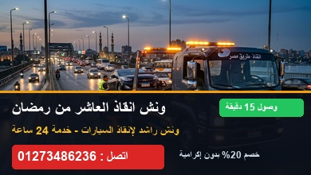
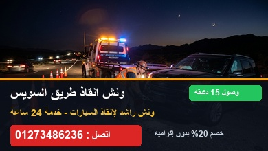
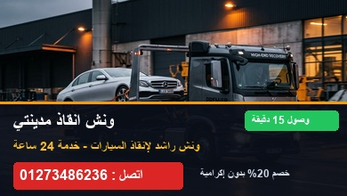
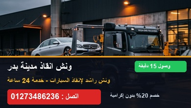
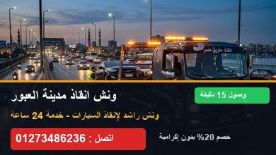
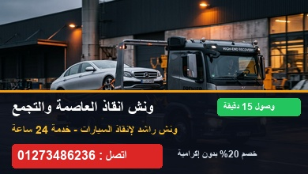

ونش انقاذ العاشر من رمضان
وصول 15 دتغطية شاملة لكافة المناطق الصناعية (A1 - B4)، الكيلو 54، طريق بلبيس، الروبيكي، والميناء الجاف والأحياء السكنية.
طلب ونش بالعاشر: 01273486236إذا تعطلت سيارتك فجأة فإن ونش راشد هو أفضل وأسرع اختيار لك. أسطول هيدروليكي حديث كامل النزول وأوناش سحب شاحنات للمصانع، متمركزون على مدار الـ 24 ساعة في: العاشر من رمضان، طريق السويس، طريق الإسماعيلية، الشروق، مدينتي، بدر، العبور، والعاصمة الإدارية.
أوناشنا متمركزة بالقرب منك في المحاور الرئيسية لتصلك خلال 15 دقيقة فقط بدون تأخير.

تغطية شاملة لكافة المناطق الصناعية (A1 - B4)، الكيلو 54، طريق بلبيس، الروبيكي، والميناء الجاف والأحياء السكنية.
طلب ونش بالعاشر: 01273486236
نقاط تمركز سريعة على طول طريق السويس أمام مدينتي، الشروق، بدر، وحتى بوابات السويس والدائري الإقليمي.
طلب ونش طريق السويس: 01273486236خدمة سريعة أمام سوق العبور، الشروق، مدينة المستقبل، ومداخل العاشر من رمضان والمركز الطبي العالمي.
طلب ونش طريق الإسماعيلية: 01273486236
سطحات هيدروليكية مجهزة لخدمة جميع بوابات مدينتي 1 و 2 ومناطق الساوث بارك والكرافت زون بأمان تام.
طلب ونش مدينتي: 01273486236تمركز دائم على مدخل 1 و 2 طريق السويس ومداخل طريق الإسماعيلية والأحياء السكنية والجامعات.
طلب ونش الشروق: 01273486236
تغطية للمناطق الصناعية، منطقة الروبيكي للجلود، الأحياء السكنية ومحور سكن مصر وطريق السويس.
طلب ونش بدر: 01273486236
أوناش سحب جاهزة بالمناطق الصناعية، سوق العبور، المحور الرئيسي، وأحياء العبور والحي الترفيهي.
طلب ونش العبور: 01273486236
جاهزية على محور بن زايد، الحي الحكومي، الداون تاون، والأحياء السكنية (R3 - R7) والقاهرة الجديدة.
طلب ونش العاصمة: 01273486236نقدم حلولاً متكاملة لنقل وسحب كافة أنواع المركبات بأعلى معايير الأمان وبخصم 20%.
سطحة هيدروليكية كاملة النزول على الأرض (Zero Angle) لحماية المصدات السفلية والجنوط الرياضية من أي احتكاك.
أوناش سحب ثقيلة مجهزة لسحب سيارات النقل، الجامبو، والسيارات التجارية لخدمة مصانع وشركات العاشر من رمضان وبدر.
وايرات فولاذية وبكرات عزم مضاعفة لانتشال السيارات المنحرفة عن الطريق على طريقي السويس والإسماعيلية الصحراوي.
أجهزة بوستر حديثة لشحن البطارية في مكانك فوراً وإعادة تشغيل السيارة بأمان تام لكمبيوتر المركبة.
مساعدة ميدانية سريعة لفك وتغيير الكاوتش وتركيب الإطار الاحتياطي على الطرق السريعة والصحراوية.
تزويد السيارة بالبنزين أو السولار في حال نفاذ الوقود على الطرق الخالية من المحطات لتكمل مسيرتك فوراً.
معايير مهنية صارمة تضمن لك تجربة إنقاذ آمنة ومريحة وبدون أي توتر.
انتشار أوناشنا في محاور استراتيجية يضمن وصول السائق إليك في وقت قياسي لإنهاء معاناتك على الطريق.
نستخدم أحزمة نسيجية معتمدة (Wheel Straps) ولا نعتمد على سلاسل حديدية تحافظ على طلاء السيارة والعفشة.
تسعير محدد مسبقاً في المكالمة بخصم 20% وبدون أي مبالغ إضافية مفاجئة أو إكراميات إجبارية نهائياً.
جميع أوناش أسطولنا مزودة بأجهزة تتبع دقيقة تتيح لغرفة العمليات توجيه أقرب ونش إليك وتتبع مسار رحلتك.
إجابات سريعة وواضحة على كل ما يدور في ذهنك قبل طلب الونش.
أسعار ونش راشد تعتبر أرخص أسعار ونش إنقاذ سيارات بخصم يصل إلى 20% وبدون أي إكراميات أو رسوم إضافية. يتم تحديد السعر النهائي بالجنيه هاتفياً قبل تحرك الونش بناءً على المسافة ونوع السيارة.
نصلك في خلال 15 دقيقة بحد أقصى بفضل التمركز الدائم لأوناشنا في العاشر من رمضان، طريق السويس، طريق الإسماعيلية، الشروق، مدينتي، بدر، العبور، والعاصمة الإدارية.
يمكنك الاتصال مباشرة على رقم الطوارئ 01273486236 أو إرسال موقعك المباشر عبر تطبيق واتساب ليتحرك أقرب ونش إليك فوراً دون أي إجراءات معقدة.
نعم، نمتلك أوناش سحب هيدروليكية ثقيلة مجهزة لسحب سيارات النقل والجامبو والربع نقل التابعة للشركات والمصانع في العاشر من رمضان ومدينة بدر على مدار 24 ساعة.
نعم، نعمل على مدار 24 ساعة، 7 أيام في الأسبوع، 365 يوماً في السنة، بما في ذلك الأعياد والعطلات الرسمية وتقلبات الطقس والشبورة المائية.
أو اتصل مباشرة على 01273486236